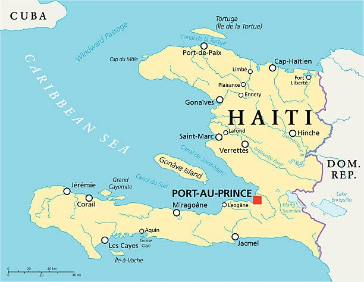
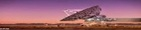
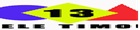

Mes chers Con-Citoyens et aux cityens du monde entier, Ce site web est crée dans le but de vendre la beauté naturelle de notre pays Haiti chérie (qui reste et demeure une perle des antilles), à tous les citoyens du monde y compris les Haitiens qui jusqu'à présent ne savent pas beaucoup sur le pays. Mes chers compatriotes de la diasporat et ceux qui vivent en Haiti il est temps de nous mettre débout pour défendre, pour sauver notre pays Haiti, qui est un si beau pays de nègre, qui a prit naissance le 1er Janvier 1804, notre précieux pays que nous aimons de toute notre vie. Haiti, terre du soeil et de sourrire celle qui par son grande, c'est fait donnée l'étiquette de la perle des antilles. Toutes les villes qui la composent, la rendrent si majestueuse. D'abord, Port au Prince, c'est la capitale c'est une très grande ville et très généreuse qu' offre le sens d'évenement et la joie de vivre. Nous avons Gonaïves, la 4e ville du pays, elle est gravée dans notre memoire, vraiment elle s'est fait meritée par ce que c'est la cité de l'indépendance. Nous devons être redevable, car, c'est là qu'on avait choisi nos Héros pour rédiger l'acte de l'indépendance. Nous avons aussi les Cayes, c'est une ville au terrain plat, déesse de la de la terre Haitienne, elle se glorifie d'avoir permit à ses habitants les plaisirs continuelles de jouir des moments les plus délicieux et la joie de vivre. Il y a la ville de Port de Paix, c'est une ville qui possède un climat le plus tranquille il ne fait ni chaud ni froid, car, c'est une longue chaine urbaine. Nous avons la 2e ville du pays, c'est le Cap-Haitien, le joyaux du pays, la ville la plus vieille la plus originales, la mieux tracée, ville des titants et d'épopée dans le parage de la perle dont on s'irrige la 8e merveille du monde en l'occurence la Citadelle de la Ferrière, pour ne citer que cela. En fin, Haiti, Symbole de charme, c'est pour la quelle nous jurons tous de mourir pour la liberté, égalité et fraternité.
Au point de vue social, nous devons travailler pour en avoir un système vraiment efficace, ou pour gérer le problème fondamental de la société à tous les niveaux.
Au point de vue économique, en majorité nous avons une économie informelle, par ce que cette dernière repose sur les petites commerces à travers toutes les villes et les sections communales du pays. Les petites marchandes qu'on appel en créole (Madan Sara) achetent les produits denrés à travers toutes les provinces du pays, pour aller les revendre au marche dans la capitale ainsi dans des grandes markets, parfois elles vendent ces produits par elles mêmes dans différents marchés respectivement.
Sur le plan de la culture, Haïti est un pays riche, dans chaque regions il éxiste une diversité des tendances, des moeurs ce qui rends au point de vue culturel, nous sommes vraiment riche nous pourrons la compare comme la couleur d'Arc-en-Ciel, la beauté du pays. Nous avons des belles plages, belle la mere, des fêtes champettes à travers toutes les villes, toutes les sections communales, tous les départements du pays.

Vous pouvez écouter une station de radio de votre choix en direct depuis Haiti et de la disporat!
Bonne écoute!
Bonne écoute
Bonne écouteEspace Publicitaire
Espace Publicitaire
Espace Publicitaire
Espace Publicitaire